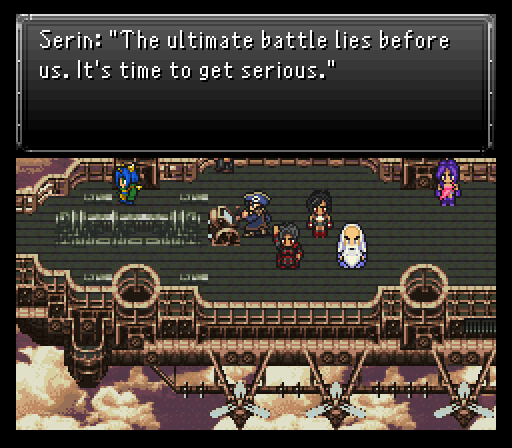
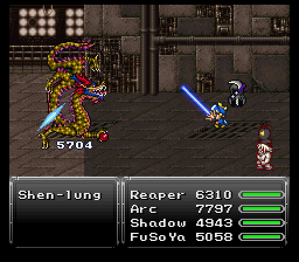
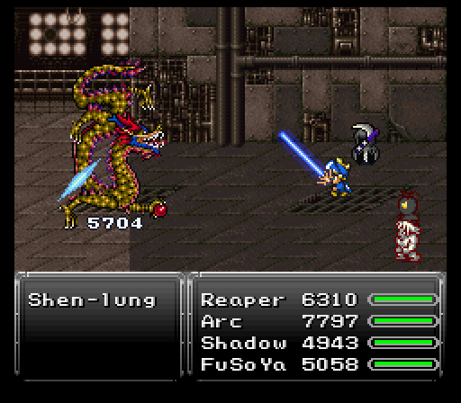
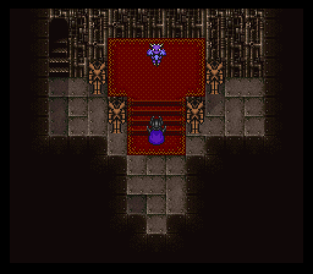
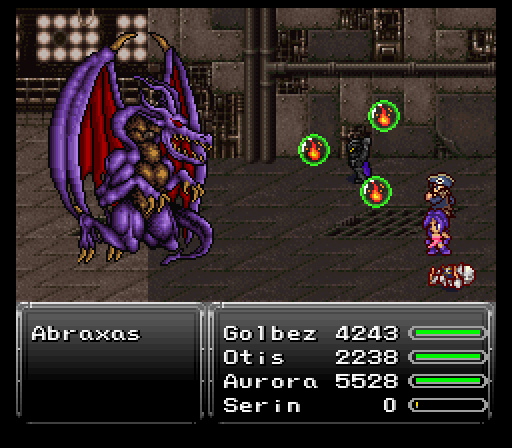
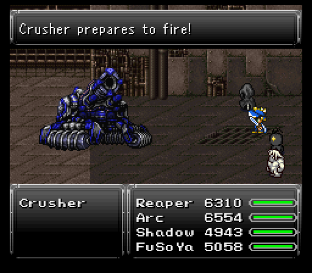

Part 31: Entering the Lair
Into Zuriel's lair:
Time to finally break into Zuriel's Fortress and proceed towards the end of the game.
Much like the Phoenix Cave, you'll be splitting up into multiple teams, only here it's three separate teams. Each team has their own route through the dungeon to take, but will need help from other teams when an obstacle impedes their progress and requires hitting a switch of some kind on another route.

The enemies for a final dungeon are definitely a few steps up from what you're used to. Nothing insanely painful, but enough that it'll force you to pay attention during battles. As expected there are many of both new and returning monsters patrolling this fortress, which are as follows:
- Boo Ghost - White, spherical Arcane magic-casting spook that can open up with Death Roulette.
- Brute - Remarkably strong, but lacking evasion of any sort. Can steal Stamina Tabs from them.
- Cenobite - Extra-dimensional beings that use a strong special attack called Hellraiser. They also have the privilege of being the only monster to have access to the strongest spell in the game, Meteo.
- Decepticon - Death-dealing, robotic organisms that side with the force of evil. They can potentially counter any attack with Blaster up to four times.
- Diablo - Dragon-like creatures that hiddenly become hasted after some time. They counter fire with ice, and ice with fire.
- Dune Worm - A revered, earth-based extraterrestrial creature and menace.
- Ex Machina - Sophisticated autonomous weapon that freezes its targets.
- Goliath - Ancient bipedal war machines that can unleash a very strong attack called Megashock. Counters attacks with Shrapnel Blades.
- Malific - Demonic magicians.
- Metallix - Cybernetic hedgehog soldiers. They use Scatter Missiles after some time, and if just one is left will Megazerk.
- Mouser - A reprogramed robot used for nefarious purposes.
- Nightblade - The deadliest assassins in the world. They invariably counter attacks with throwing stars and throw weapons every turn until they either commit Seppuku, or don't and use Level ? Holy.
- Plague Doc - Psychotic doctors who dabble in the dark arts. They use both high level healing and attack magic, and can counter any attack with Meteor.
- Shredder - Clone of a supervillain from another dimension. They use only regular attacks and Wind Slash, but when killed will 100% of the time use their special attack, Aura Crusher, which causes instant death.
- Thresher - Sadistic warriors of the highest order. They use scrolls and sometimes throw spears, and both counter magic with and use their special attack, Cruel Slash, which causes instant death. After some time passes they will unleash Omnislash.
- Yurei - Angry, trapped spirits of people killed during the apocalypse. Can attack up to three times in a row.
Previously encountered/mentioned:
- Auroch - Fought at Spellbound Castle.
- Beezlebub - Fought at Spellbound Castle.
- Big Daddy - The Big Daddy from Rogue City makes a return.
- Gremlin Nob - Fought at Tyrano Tower.
- Dorky Face - Fought at Tyrano Tower.
- Dragonzord - Rare encounter on the overworld.
- ED-209 - These were in the cave section of Avalon's dream.
- Flyclops - Fought inside Guru's basement.
- Iron Titan - The rare encounter from Spellbound Castle.
- Malpixie - Fought at various places.
- Medusa Head - Fought earlier, this time they show up in a group.
- Minion - The rare encounter from the dinosaur forest.
- T-Rexaur - From the dinosaur forest, and Tyrano Tower.
- Tiamat - Fought at Spellbound Castle.
- Karakasa - Fought at Tyrano Tower.
- Ultima Demon - Fought at various places.
The Nightblade/Thresher formation found well into the fortress is arguably the toughest random encounter in the game. You'll need to act fast and if possible get Image and/or Clear status up to help against Thresher's Cruel Slash attack, in addition to the constant throwing of weapons by the Nightblades. Fortunately the Nightblades can be cleaved in half by summoning Odin. Be prepared to take some losses when encountering these guys.
Only one team gets into any action in this segment and it's team #3. FuSoYa and Shadow comprise the magical side of the team with Arc using the always brutal Slayer Glove alongside the Zodiac Sword and Lightsaber. Reaper fills up the last slot so he has a chance to collect some more souls for his collection.
Most of the treasure team #3 finds is relegated to stat boosters, but another Vitality Cap is nice for those that want boosted hp, but can't equip a Dragon Soul relic or would rather use that relic slot for something else.
Once the team hits their save point (there's at least one for each team on their respective routes), you may notice a familiar sight waiting to jump down on you as you attempt to go down the stairs. Evidently if Raditz got two boss fights, then Majin Buu gets a second fight.

Unlike his initial boss fight, Majin Buu flies solo here. Also unlike his first battle, Majin Buu focuses more on magical attacks. Kinda hurts him here because most of those aren't going to register for much damage besides Gravity. He does have a physical skill in Megapunch that'll basically destroy any frontliner under 200 defense with Protect active though. Doesn't use it all that much luckily.
Finally, when Majin Buu decides to glow, not only does he get Protect and Shell buffs, he'll fire off a non elemental nuke on his next turn. On his first life, it's Quasar which can hit everyone for roughly 2k or more damage. On his second life? Everyone is getting zapped for 3.5k damage or so from Ultima. This is where Arc can be a huge boon because on that second life, he can pop Runic at the right time and nullify Ultima. Me though, I have him Runic, then Shadow follows up with a Mimic, allowing him to activate Runic and let Arc go right back on the offensive.

After the pink puff bringer falls (and Arc hitting the floor cause Megapunch), you'll get a Majin Vest. They've got one more boss they can presently access, but they'll be taking a rest while team #2 starts their trek through the dungeon.
Reaper's strongest Spirit: If you take out Majin Buu with Reaper in your party, you will actually get Majin Buu's soul, which includes Mega Punch, the strongest physical special attack in the game.

Vegnagun:
Team 1 still sits on the sidelines as there's a boss I want only my best units to tackle, hence my Team 2 party. Golbez and Otis shell out massive damage while Aurora and Serin are primarily here for their support capabilities, but can dish out some insane AoE damage to help clean out randoms quickly.
Speaking of randoms, there's a new enemy Team 2 runs into that's worth some chuckles (a Dragonzord). The real fun though begins when the team hits their first save point. In the jail cell next to it is an optional boss, Vegnagun, which is easily one of the toughest bosses in the game. It absorbs all elements except for fire, ice and lightning, so you'll want to remove any of the other elemental weapons before initiating the battle.

Vegnagun gets three lives to play with, but unlike most other bosses with extra lives, there's no message telling you when the boss extends its own life force. Rather, Vegnagun announces its own life extension with a one time move (and casting Protect and Shell at the same time).
As for its non charge up moves, it's nothing you should be worried about for the first wave unless you see it charge up vast amounts of energy. That's when it'll launch Shadow Flare on its next turn. Can easily nail everyone for ~3500 or more damage, but I did so much damage that it just skipped that and went on to the 2nd phase.
The transition from its initial phase to the 2nd phase brings about a casting of Anti-Magic Field. Buff removal is annoying, but it's the only time it happens so rebuffing will be easy.
What won't be pleasant is Vegnagun using some stronger attacks in this phase, up to and including the new charge up move Mind Blast. Annoying, but those Missile counters are dangerous. Not for the damage, but the third phase transition.
The third phase transition has Vegnagun cast the always dangerous Heartless Angel at the start. If anyone is under the effects of seizure, there's a very good chance the person will go down before you have a chance to heal up.
The final phase has Vegnagun throw out damn near every high end attack you can think of, sometimes even chaining them in back to back attacks (like Magnitude Eight into Quake). There's also Blaster to be very worried about here. The charge up move for this phase is Devil's Flash which is single target and is basically going to one hit kill whomever gets struck due to it hitting for 6500 or so damage.

You can steal an Omni Elixir, but the drop is much more useful, an Omega Shield. Stats that are almost on par with the Paladin Shield, but with some different resists (absorbs water and wind, immune to earth, halves poison, and is weak vs holy). Also, you will receive a Dream Stone (rare item) after the battle, but only if you missed the one inside Avalon's Soul. With this you can visit the Dream Shrine by talking with the Angelo NPC inside the Developers' House at Fraust.
The Black Waltz approaches:
Time to delve deeper into Zuriel's Lair. Today, there's two dragons that need to be put down. Teams 2 and 3 get to do the deed after both advance a little further in their dungeon sections. Team 1 STILL isn't seeing any action....at least in this segment.
Team 3's dragon is Shen-lung.
 

Shen-lung's sole dangerous move is his special skill Heartstopper. This physical strike is on par with the likes of Shenron's special skill, namely it's going to one hit kill a majority of frontliners unless you have extremely high physical defense and a Protect buff active.
Shen-lung uses lightning attacks, the occasional Death spell, Lifeshaver, and will also counter any water-elemental attacks with either Dispel, or Reverse Polarity. After some time, he can use Mute on the entire party.
Other then that, you do want to steal here as another Omni Elixir is always nice to have. Shen-lung drops a Serpent Mask as well.
As for Team 2? They get to deal with Abraxas...and is the karmic counterbalance to Shen-lung being somewhat of a pushover. In fact, he's the hardest dragon to fight.
Elemental attack wise, Abraxas uses a mix of lightning and water moves such as Flash Rain, El Nino, and Giga Volt. There's also some non-elemental attacks like Delta Attack, Gravity, and the always scary Blaster as well. Considering the boss can follow up most moves with some extra physicals, something like Gravity coming out first can be extremely nasty. After some time he will use the always dangerous Flare spell.
Yet despite all of that, Abraxas's most annoying and potentially dangerous move is his special skill Embolism. It inflicts stop, and has a high hit rate percentage to do so. He can then use Dread on one of his upcoming turns to petrify the stopped character.
Oh, and the best part of it all? Abraxas gets angry after you burn one of his lives (He's got two extra lives on top of his initial starting one). He'll Ninth Dimension someone, then throw out 3-4 physical strikes. Not the worst, but random Revenge counters that start after the initial life gets snuffed out until the fight's end is.
If there ever was a fight you'd want to employ Oboro, this would be it. Ninja Scroll spammage is the best you can do to minimize Embolism's stop shenanigans. Fenrir and Vysage are also highly valuable summons to have equipped for emergency full party protection from Embolism, albeit one time only for each.
While Abraxas does have an Quick Ring for stealing, if you don't get it by the time the Revenge counters begin, you're better off forgetting about it unless you're damn sure you can deal with reviving the dedicated stealer on top of everything else.
Once the dragon expires, you get its Dragon Soul relic drop.

With all 8 dragons defeated, the seal on the Black Waltzes of FF9 fame is released and they join as the final esper of the game. Insane damage when summoned (and it doesn't hit your own party too unlike vanilla's Crusader) and also teaches the final spell in the game, Meteo, which hits four times. Pretty nice, but it can be inaccurate at times.
Deeper into the lair:
Team 1's way forward was cleared up by the others via switches, but they aren't getting out completely free of battling bosses. On their way through an old Magitek Research Facility hallway, they run into a dragon, Doomkaiser, who's decided to park its ass right in front of the door going further in.

Doomkaiser opens the fight with Level 5 Death like Omega Weapon in Final Fantasy VIII. There's no Terra Break during the fight to worry about thank god, heh.
Ailments are Doomkaiser's main strength with moves like Plague (poison), Soulshatter (zombie), and Mind Blast. Throwing the Aeon Crystal relic onto your primary support unit is going to be a very good idea here.
Doomkaiser's damage also isn't to be taken lightly. Physicals can hit frontliners with roughly 190 defense and no buffs for around 3000 or so damage and it has access to Blaster which can break 4k damage on the party if it feels like it.

As if all that wasn't worth watching out for on its own, Doomkaiser's very lifeforce is fueled by magic, Basically, if it has ANY mp left when its hp hits 0, it'll instantly revive. Luckily it has a weakness to holy and Expel is holy elemental. One Expel typically rips off 700-1200 mp, making it easy to burn its 9k mp pool away. Once that mp's gone, it's more or less a sitting duck. A Wrath Band is the drop here.

Once team 1 makes it inside the doors the other two teams opened up, you'll have a choice to go west or east to reach another switch and a weight outside which can be used to hit the switch the party on that side is standing on, creating a staircase for them to climb up to the center path and repeat the process for the other team.
After all the switch hitting shenanigans end, the teams have a big fight ahead of them. Each team gets to fight one of the magic statues Zuriel decided to drain power out of for kicks. The team that gets to go up the center path though gets another fight on top beforehand as some random tank by the name of Crusher stands guard before reaching the statue.

Crusher has only one real notable ailment inflicting move in Toxic Bomb. Otherwise, it's all damage with strong physicals and Aeon Cannon. Loves to counter with Missile and Delta Attack too. Just pray it uses Scatter Missiles rarely because that very likely puts anyone slammed by at least one or two of the hits in range to be deleted by Delta Attack.
Finally, when a message pops up saying Crusher's preparing to fire, heal up fast. Crusher's next turn will have it using Aeon Cannon four times in a row which can easily delete one or two people if you're unlucky.
Once the bucket of bolts gets dismantled, you'll get a Golden Apple and a much appreciated save point to rest up at.
While I would dive right in to dealing with the statues, there just so happens to be one final task out in the World of Ruin to take care of, as well as a timeskip to gain some levels and learn Meteo for the few who can. I'd like for everyone to be around level 70 when I return. If you wish to carry on instead that's perfectly fine, the upcoming statues once defeated give 100 spell points each, so you can learn Meteo and/or any other top-tier spells you've yet to as of yet, before the final battle. In any event, I tell the statues "brb" and teleport away.
Final Limit: Cloud learns his most powerful Limit Break skill, Omnislash V5, at level 70.